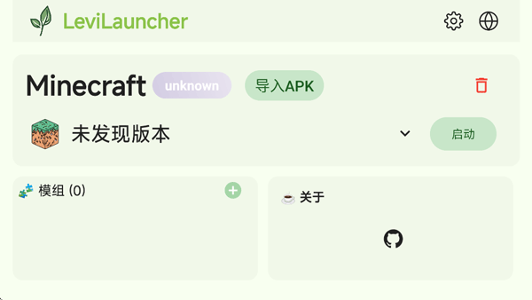

Bedrock 玩家最头疼的三个问题，我用一个启动器全解决了
正式版和预览版截图混在一起找不到？装了 Mod 的版本启动就闪退？多个版本切换重置游戏数据？LeviLauncher 的版本隔离和内容工具箱让这些问题彻底消失。
去年冬天我沉迷上了 Minecraft Bedrock 的预览版——每个月都有新内容可以抢先体验，洞穴、深暗之域、考古系统……拍了一堆截图想跟朋友炫耀。但有一天我想找几个月前那张"古代城市初见"的截图时，打开 AppData 里的 screenshots 目录直接傻了眼。
正式版的、预览版的、在不同服务器上玩的、加了光影的……几百张 png 全堆在一起，文件名都是 2025-11-15_14-32-08.png 这种格式，光看名字根本分不清是哪个版本截的。AppData 本身又默认隐藏，翻路径就够折腾半天，最后直接放弃了。
这还只是截图。更头疼的是版本切换。我电脑上同时装着正式版和 Preview 版，正式版加了 LeviLamina 和一堆生活 Mod，Preview 版用来体验新特性但什么 Mod 都不加。问题是 Bedrock 不做版本隔离，每次切版本都担心会不会把另一个版本的存档搞坏——有一次我切 Preview 之后正式版的 Mod 配置真的丢了一半，搞到凌晨才恢复。
朋友说你没用过 LeviLauncher 吗？我这才第一次听说这个东西。
它是什么——一个专为 Bedrock 做版本托管的启动器
一开始我以为这又是什么多版本管理工具——类似 Java 版玩家耳熟能详的那些启动器。但实际用下来发现 LeviLauncher 的思路不太一样：它不是简单地帮你下载多个版本，而是把每个托管版本完全隔离，包括游戏本体、Mod、资源包、世界存档、截图，甚至系统注册项都是独立的。
就像给每个版本开了一个虚拟机，但轻量得多。
安装的过程比想象中顺利。国内访问 GitHub 经常卡，我从LeviLauncher官网上找到的蓝奏云镜像入口——这是官方维护的备用下载渠道，解压密码就是 levi，下完双击 exe 跟着向导走就行。启动后首页直接列出所有已托管的版本，一眼就能看到哪个是正式版、哪个是 Preview、各自装了什么 Mod 和资源包。

下载安装：后台排队、断点续传、不阻塞
第一次装 Preview 托管版本的时候我特意观察了下载页面——进度条、实时速度、已用时间、预计剩余时间，全都有。而且下载和安装是分阶段的——先从镜像源拉 Bedrock 游戏包到临时目录，下载完先做完整性校验，校验通过才进入安装阶段（解压、注册到系统、建立隔离工作区）。
最实用的是排队安装。我让 Preview 在后台下载的同时，又去选了一个 Release 版本排队。两个任务各自有独立的进度显示，切换页面或者重启启动器都不丢。中途下载源出了点问题断了一次，重新进来自动从断点续传，不用从头下。
如果你在国内网络环境不稳定，镜像测速功能可以帮你挑最快的源——不过我用蓝奏云镜像装好启动器之后，内部下载走的是自己的镜像池，速度还不错。
版本隔离：我的截图终于能按版本找了
装上 LeviLauncher 之后第一个感受就是截图的变化。之前那个混在一起的 screenshots 目录被废弃了，每个托管版本有自己独立的隔离工作区，截图直接存在 <隔离工作区>\screenshots\ 下面。
在 LeviLauncher 的 Content 页面切到 Screenshots，左上角有个版本选择器，切哪个版本就只显示那个版本的截图。正式版的生活 Mod 截图和 Preview 版的古代城市截图，现在完全分开放。
更妙的是删除版本的时候，隔离工作区跟着一起清理——我之前删过一个测试用的 Preview 版本，它的截图、世界、Mod 全部一起移除，不用手动翻 AppData 去删残留文件。
那次启动失败，按五步排查就解决了
但说实话，不是一切都一帆风顺。上个月某次更新后，我装了 Mod 的正式版突然启动不了——点 Launch 之后游戏窗口一闪就没了，日志里有个 dll load failed。
我按LeviLauncher文档里记录的五步排查流程一步步来：
第一步先排除 Mod。禁用这个版本里所有 Mod，启动——能进主菜单。说明问题在 Mod 身上。然后逐个重新启用，发现是某个新加的 .dll Mod 跟新版 LeviLamina 不兼容。
第二步查组件完整性。打开 Settings → Components，Gaming Services、GameInput、GDK 这些都正常，不是组件缺失的问题。
第三步看安装状态。版本详情页显示安装完整，不是中途取消导致的残缺。
第四步做干净隔离对照。新建了一个什么都不装的隔离版本，正常启动。进一步确认问题就在之前那个隔离工作区的 Mod 配置里。
第五步检查路径权限——路径没有奇怪字符、磁盘空间充足、没有被杀毒软件标记。
最后定位到那个不兼容的 .dll Mod 之后，卸掉它重新启动，一切恢复正常。整个排查过程我花了不到十分钟，而在那之前遇到类似问题可能要折腾一两个小时。
内容工具箱：不只是启动器
现在 LeviLauncher 已经不只是帮我管版本了。内容工具箱里有世界备份功能，可以一键导出 .mcworld；资源包和行为包的管理比原版简单；还有失败任务自动重试——上次网络波动下载断了，它自己重试了两次就搞定了。
当然也不是完美的。目前还没有显式的暂停按钮，要暂停只能取消任务重新选版本安装（好在它会智能跳过已下载的文件）。截图不支持在启动器里重命名或分类，得手动进文件夹操作。这些小瑕疵不影响大局，但能做得更好的话就更省心了。
写在最后
从之前那种"切版本怕丢存档、找截图翻半天、启动失败乱撞墙"的状态，到现在正式版和 Preview 版各自安稳、截图按版本分得清清楚楚、出问题有系统性排查流程——LeviLauncher 改变的不只是 Bedrock 的使用体验，更像是给每个版本盖了一个专属房间，互不打扰。
如果你也是 Bedrock 的多版本玩家，或者正在被 Mod 冲突、截图混乱、启动失败这些问题困扰，不妨试试。很多时候真正让你头疼的不是游戏本身，而是缺乏一个靠谱的管家。
对了，相关的安装包和文档我都同步在三个仓库里，GitHub 上有完整的版本历史和更新日志，国内访问不方便的话可以直接去Gitee 或 GitCode 拿。